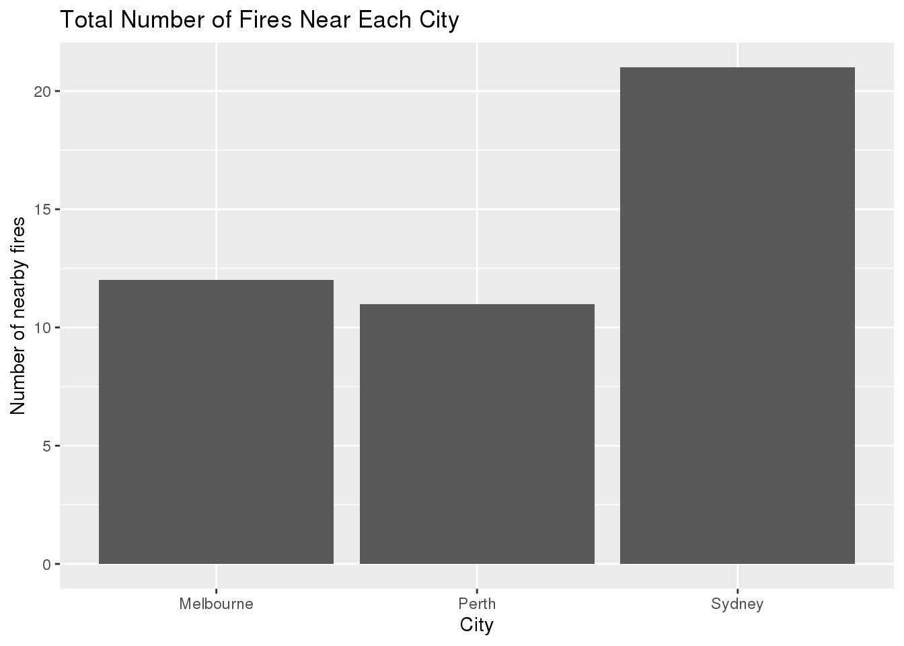
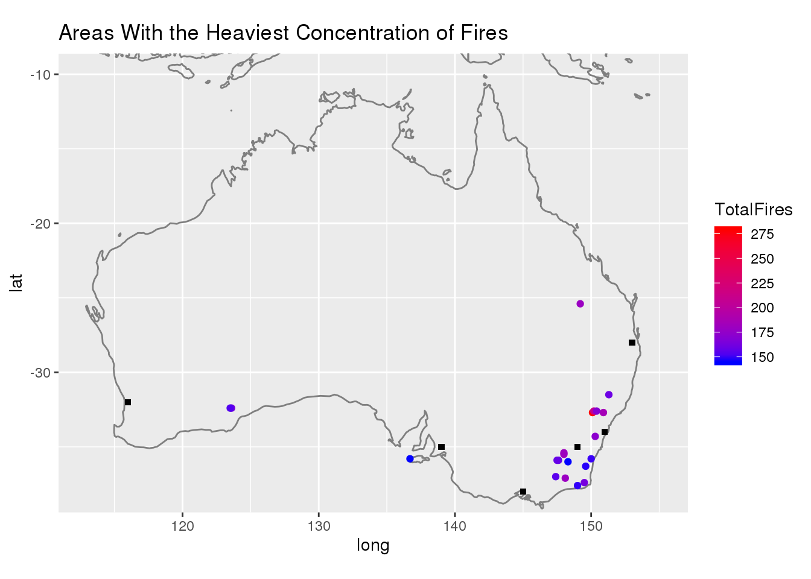
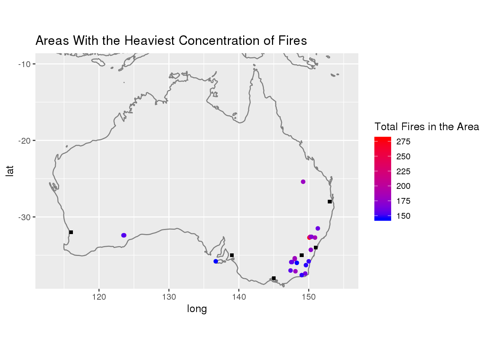

Using the Australia fires data from tinytuesday I will investigate the location and frequency of the fires in Australia. I will use the rainfall and MODIS datasets to explore this. The variables in the rainfall data are city_name, which is the name of the city where rainfall was measured, lat and long, which are the coordinates of the city, year, month and day, which together are the date the rainfall was measured on. The MODIS data has the latitude and longitude variables which show the coordinates of the fire’s center, acq_date which is the date when the fire started over the 8 days measured and confidence which is the percent chance that the point recorded is actually a fire.
Rainfall <- read.csv(here::here("content", "post", "2020-12-13-australia-fires",
"data", "rainfall.csv"))
Temperature <- read.csv(here::here("content", "post", "2020-12-13-australia-fires",
"data", "temperature.csv"))
Fires <- read.csv(here::here("content", "post", "2020-12-13-australia-fires", "data",
"MODIS_C6_Australia_and_New_Zealand_7d.csv"))How many of these fires happened near the cities? I will examine this by counting the number of instances of fires with longitude and latitude equal to the city coordinates rounded to 0 decimal places.
CityCoord <- Rainfall %>%
select(city_name, lat, long) %>%
rename(longitude = long, latitude = lat) %>%
mutate(longitude = round(longitude, digits = 0), latitude = round(latitude, digits = 0)) %>%
group_by(city_name) %>%
summarize(latitude = mean(latitude), longitude = mean(longitude)) %>%
mutate(longitude = round(longitude, digits = 0), latitude = round(latitude, digits = 0))
Fires %>%
mutate(longitude = round(longitude, digits = 0), latitude = round(latitude, digits = 0)) %>%
left_join(CityCoord, by = c("longitude", "latitude")) %>%
na.omit(city_name) %>%
count(city_name) %>%
ggplot(aes(city_name, n)) +
geom_bar(stat = "identity") +
ylab("Number of nearby fires") +
xlab("City") +
ggtitle("Number of Nearby Fires vs Cities")
There were fires only in three out of the six cities recorded, and it seems Sydney has by far the greatest number of nearby fires, having almost double the number of Perth and Melbourne.
Where have fires happened the most? To determine this, I will round the longitudes and latitudes of all fires to two decimal places and count the 10 areas with the highest number of fires.
FireMap <- Fires %>%
mutate(longitude = round(longitude, digits = 1), latitude = round(latitude, digits = 1)) %>%
group_by(longitude, latitude) %>%
summarize(total = n()) %>%
ungroup() %>%
slice_max(total, n = 20) %>%
rename(TotalFires = "total")
ggplot() +
borders("world") +
coord_quickmap(xlim = 113:155, ylim = -38:-10) +
geom_point(data = FireMap, aes(longitude, latitude, size = TotalFires, color = TotalFires,
position = "jitter")) +
guides(size = FALSE) +
scale_color_gradient(low = "blue", high = "red") +
geom_point(data = CityCoord, aes(x = longitude, y = latitude, shape = 15)) +
scale_shape_identity() +
ggtitle("Areas With the Heaviest Concentration of Fires")## Warning: Ignoring unknown aesthetics: position
Fires %>%
mutate(longitude = round(longitude, digits = 1), latitude = round(latitude, digits = 1)) %>%
group_by(longitude, latitude) %>%
summarize(total = n()) %>%
ungroup() %>%
slice_max(total, n = 20) %>%
rename(`Total Fires In Area` = "total")## # A tibble: 21 x 3
## longitude latitude `Total Fires In Area`
## <dbl> <dbl> <int>
## 1 150. -32.7 279
## 2 150. -32.6 207
## 3 151. -32.7 185
## 4 148 -35.5 183
## 5 148 -35.4 181
## 6 148. -37.1 179
## 7 149. -25.4 179
## 8 150. -34.3 172
## 9 150. -32.6 169
## 10 124. -32.4 163
## # … with 11 more rowsIt seems the areas with the highest number of fires are all near the eastern coast of Australia. It should be taken into account, however, that total number of fires in an area does not necessarily indicate how damaged the area was by fire, as it doesn’t show the intensity of the fires. As such, one area can be more damaged by fires than another even with a lower total number of fires as long as the intensity of each of its fires is large enough.
How has the frequency of fires changed over the 8 days, and is there any difference between the frequency of fires during the day and during the night? To determine this, I will create a line graph counting every instance of a fire over the days and faceting it based on whether it happened during the day or during the night. One thing to note however is that, as indicated by the confidence variable ranging from 0% to 100%, it is possible that some of the fire detections by the satellite listed in the data are not actually fires, so I will also make a graph for only fire detections above 50% confidence and at 100% confidence to see if there’s any variation between them.
levels(Fires$daynight) <- c("Day", "Night")
Fires %>%
group_by(daynight) %>%
count(acq_date) %>%
ggplot(aes(acq_date, n)) +
geom_line(group = 1) +
ylab("Number of Fires") +
xlab("Date") +
ggtitle("Number of Fires over time (All)") +
facet_wrap(~daynight) +
theme(axis.text.x = element_text(angle = -45, hjust = -0.1))
Fires %>%
filter(confidence >= 50) %>%
group_by(daynight) %>%
count(acq_date) %>%
ggplot(aes(acq_date, n)) +
geom_line(group = 1) +
ylab("Number of Fires") +
xlab("Date") +
ggtitle("Number of Fires over time (50% and above Confidence)") +
facet_wrap(~daynight) +
theme(axis.text.x = element_text(angle = -45, hjust = -0.1))Fires %>%
filter(confidence >= 100) %>%
group_by(daynight) %>%
count(acq_date) %>%
ggplot(aes(acq_date, n)) +
geom_line(group = 1) +
ylab("Number of Fires") +
xlab("Date") +
ggtitle("Number of Fires over time (100% Confidence)") +
facet_wrap(~daynight) +
theme(axis.text.x = element_text(angle = -45, hjust = -0.1))The amount of fires is mostly consistent with a spike on day two and day seven for nighttime and on the fifth and seventh day for daytime, but there’s a very sharp drop in the number of fires for both daytime and nighttime on the eighth day. In addition, although different confidence levels change the total number of fires, the overall trend is mostly the same for the three levels chosen.